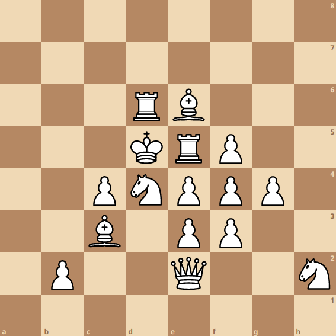

Frishberg Chess Structure
This all began with a simple idea: an "indestructible" chess structure. Looking at a pawn to the back left of a bishop, we see that they each protect eachother, thus making an "indestructible" chess structure. I had the idea to take this further though. As a result, I coded a complex Python program that created chess structures until it created the "optimal" structure.The basic idea behind it was to find a structure of pieces where every piece was protected by another, and every piece was protecting at least one other piece. Furthermore, it would be using all 16 white pieces. Once completing this, I was presented with a few structures, but they were really apart and in my opinion, inefficient. At this point in the project, I had a few ideas, but one really hit me. Optimize the structure for the "number of protections".
To give a specific and simple example, imagine a board with rooks in the top left and bottom right, as well as a queen in the bottom left. The rooks both protect the queen, but the queen protects both rooks (2 pieces). This would count as 2 "protections" for the queen, and a total of 4 "protections" for the structure. My idea was that if I optimized for this, it would slowly shape to be the most efficient board, and really intertwined, as you got closer to the maximum number of "protections". After days of coding and waiting for my 2019 PC to compute, I was presented with the structure above, which has a total of 38 "protections" (average of 2.2 "protections" per piece). Although it doesn't exactly translate over to the chess board, it covers more of the theory, and I thought the idea was really interesting overall.
Here is the link to the GitHub repo: Frishberg Chess Structure